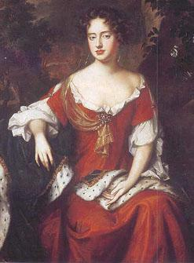
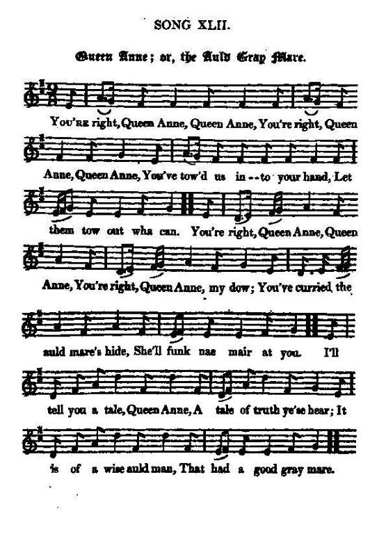

Queen Anne or The Auld Gray Mare
La Reine Anne ou La Vieille Jument grise
Allegory on the Union Act (1707)
Allégorie à propos de l'Acte d'Union de 1707

Queen Anne (1665 - 1702 - 1714)
Tune - Mélodie
"The Auld Gray Mare"
from - tiré de Hogg's "Jacobite Reliques" Part I, N° 42
Sequenced by Christian Souchon

|
According to "The Fiddler's Companion" the tune "The Auld Gray Mare" appears in the 1840 manuscript collection of the Cumbrian musician John Rook. Hogg's "Jacobite Reliques" precedes by 23 years this "first" publication. There is a strong likelihood that the tune be still much older.
Source "The Fiddler's Companion" (cf. Link). |
Selon le "Fiddler's Companion", la mélodie "La vieille jument grise" apparaît en 1840 dans le recueil de manuscrits du musicien de Northumberland, John Rook. Les "Reliques Jacobites" de Hogg précèdent de 23 ans cette "première" publication et il y a toutes chances pour que cette musique soit bien plus ancienne.
Source "The Fiddler's Companion" (cf. liens). |

|
QUEEN ANNE OR, THE AULD GRAY MARE.
1. You're right, Queen Anne, Queen Anne, You're right Queen Anne, Queen Anne, You've tow'd us into your hand, Let them tow out wha can. (twice) You're right, Queen Anne, Queen Anne, You're right, Queen Anne, my dow; You've curried the auld mare's hide, She'll funk nae mair at you. (twice) I'll tell you a tale, Queen Anne, A tale of truth ye'se hear; It is of a wise auld man, That had a good gray mare. (twice) 2. He'd twa mares on the hill, And ane into the sta', But this auld thrawart jade, She was the best of a'. This auld mare's head was stiff, But nane sae weel could pu'; Yet she had a will o' her ain, Was unco ill to bow. Whene'er he touch'd her flank, Then she begoud to glowr; And she'd pu' up her foot, And ding the auld man owre. 3. And when he graith'd the yaud, Or curried her hide fu' clean, Then she wad fidge and wince, And shaw twa glancing een. Whene'er her tail play'd whisk, Or when her look grew skeigh, It's then the wise auld man Was blyth to stand abeigh. " The deil tak that auld brute," Quo' he, " and me to boot, But I sail hae amends, Though I should dearly rue't." 4. He hired a farrier stout, Frae out the west countrye, A crafty selfish loon, That lo'ed the white moneye: That lo'ed the white moneye, The white but and the red; And he has ta'en an aith That he wad do the deed. And he brought a' his smiths, I wat he paid them weel, And they hae seiz'd the yaud, And tied her head and heel. 5. They tow'd her to a bauk, On pulleys gart her swing, Until the good auld yaud Could nowther funk nor fling. And rippet her wi' a spur, Ane daudit her wi' a flail, Ane proddit her in the lisk, Anither aneath the tail. The auld wise man he leugh, And wow but he was fain! And bade them prod eneugh, And skelp her owre again. 6. The mare was hard bested, And graned and routed sair; And aye her tail play'd whisk, When she dought do nae mair. And aye they bor'd her ribs, And ga'e her the tither switch : " We'll learn ye to be douce, Ye auld wansonsy b—h." The mare right piteous stood, And bore it patiently; She deem'd it a' for good, Though good she couldna see. 7. But desperation's force Will drive a wise man mad: And desperation's force Has rous'd the good auld yaud. And when ane desperate grows, I tell you true, Queen Anne, Nane kens what they will do, Be it a beast or man. And first she shook her lugs, And then she ga'e a snore, And then she ga'e a reirde, Made a' the smiths to glowr. 8. The auld wise man grew baugh, And turn'd to shank away: " If that auld deil get loose," Quo' he, " we'll rue the day." The thought was hardly thought. The word was hardly sped, When down came a' the house, Aboon the auld man's head : For the yaud she made a broost, Wi' ten yauds' strength and mair, Made a' the kipples to crash, And a' the smiths to rair. 9. The smiths were smoor'd ilk ane, The wise auld man was slain ; The last word e'er he said, Was, wi' a waefu' mane, " O wae be to the yaud, And a' her hale countrye! I wish I had letten her rin, As wild as wild could be." The yaud she 'scaped away Frae 'mang the deadly stoure, And chap'd awa hame to him That aught her ance afore. Take heed, Queen Anne, Queen Anne, Take heed, Queen Anne, my dow , The auld gray mare's oursel', The wise auld man is you. Source: Jacobite Minstrelsy, published in Glasgow by R. Griffin & Cie and Robert Malcolm, printer in 1828. |
LA REINE ANNE OU LA VIEILLE JUMENT GRISE
1. Vous fîtes bien, reine Anne, Vous fîtes bien, reine Anne, Dans vos rets nous tombâmes ! Qui pourrait s'en tirer! (bis) Que vous fûtes habile, Que vous fûtes gentille, D'avoir avec l'étrille Calmé votre jument! (bis) Ecoutez donc l'histoire, A laquelle il faut croire, Du vieillard méritoire Et de ses trois juments. (bis) 2. Deux sur le pré gambadent L'autre reste à l'étable. La dernière, malade, Est la meilleure au trait. Et bien que vieille et raide, Il ne lui faut point d'aide. Oui, mais elle l'excède: On peine à la dompter. Approchez la baguette: La farouche coquette, D'une ruade alerte Vous envoie promener! 3. Mais qu'il soigne sa rosse, Qu'il lui passe la brosse, La jument tend sa bosse, Lance de doux regards. Mais lorsque sa queue fouette, Que son regard inquiète, Il convient de la bête, Qu'on se tienne à l'écart. "Que le diable m'emporte Si je faisais en sorte Que tu sois la plus forte. Je ne serais qu'un couard!" 4. De l'ouest où il réside, Contre force subsides, Accourt, malin, avide, Un maréchal-ferrant, Epris de blanches pièces, Ou de blondes espèces. Il lui fait la promesse, Lui, d'en venir à bout. Il fait venir du monde Payé rubis sur l'ongle, Et de la bête immonde, Ils lient tête et sabot. 5. Voilà qu'ils la suspendent A des cordes qu'ils tendent. Finies les sarabandes De la vieille jument! L'éperon la déchire, Le fléau la fait cuire Un aiguillon, bien pire, Pique son fondement. Il riait le brave homme, Ah, il fallait voir comme, Criant qu'on l'aiguillonne Et qu'on la frappe encor. 6. La bête était matée, Anéantie, dupée, Et, la queue hérissée, Bientôt n'en pouvait mais. Eux lui perçaient les lombes La fouettaient de la longe: "Nous t'aurons à la longue, Vieille dévergondée!" Elle dans le silence Subit avec patience: "Ils font ça pour mon bien Que je n'aperçois point." 7. Mais la désespérance Est plus forte qu'on pense: Elle rend sa vaillance A ce pauvre animal. Quand on y pousse une âme Méfiez-vous, Reine Anne, Qu'elle soit d'homme ou d'âne, Elle commet le mal! Se dressant sur ses pattes, La voilà qui renâcle, Et rue sur le bellâtre, Belluaire éberlué. 8. Il se fraie, le vieux sage, Vers la porte un passage: "Si elle se dégage, Nous nous en souviendrons." Or, il avait vu juste, Car la hutte du rustre, Sans doute fort vétuste S'abîme sur son front. La vieille haridelle Dont les forces sont celles De dix juments comme elle A tout fait s'effondrer. 9. Ecrasant dans sa chûte Le maréchal hirsute Avec toute la hûte Et le vieux qui pleurait: "Maudite rossinante Et ta terre vaillante! Que ne t'ai-je, innocente, Laissé ta liberté!" On voit notre commère Emerger des poussières L'ancien propriétaire Va la voir revenir! Prenez garde, Reine Anne! Prenez garde, Reine Anne! Nous sommes le vieil âne. Le vieux sage c'est vous! (Trad. Christian Souchon(c)2009) |
|
The poetry of this song is mere doggerel, but the allegory is good. By the
twa mares on the hill
, Ireland and Wales are meant. And England by
the ane into the sta'
, as enjoying the principal fruits of the Union. Scotland is represented by the
auld gray mare
; while the
Farrier stout
and his smiths, are
Queensberry (1662 - 1711) and his hirelings
, who effected the Union. The drift of the song is evidently to represent to Queen Anne the danger of forming a union between the two kingdoms. There is considerable humour displayed in it, though rather of a vulgar kind".
Source: "Jacobite Minstrelsy" summing up a long note by Hogg in his "Jacobite relics". |
Le texte de ce chant est en vers de mirliton, mais l'allégorie est pertinente. Les
deux juments dans le pré
, sont l'Irlande et le Pays de Galles. L'Angleterre est celle qui
reste à l'étable
et qui tire les principaux avantages de l'union. L'Ecosse est la
vieille jument grise
; tandis que le
maréchal-ferrant
et ses acolytes sont
Queensberry (1662 - 1711) et ses sbires
qui menèrent à bien l'union. Le sens général de la chanson est d'alerter la Reine Anne sur le danger de constituer une union entre les deux royaumes. On y voit déployé beaucoup d'humour, même s'il n'est pas du meilleur goût.
Source: "Jacobite Minstrelsy" qui résume une longue note de Hogg dans ses "Reliques Jacobites". |